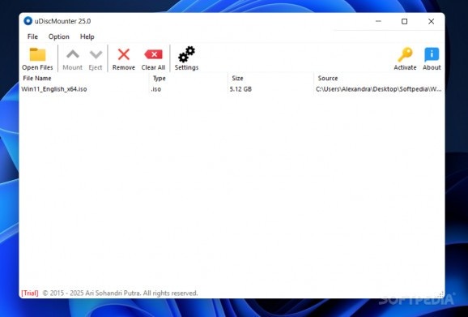

Mount and manage CD/DVD image files with ease. Supports ISO, BIN, IMG, and more.
uDiscMounter is a straightforward and efficient application designed to help you mount and explore CD/DVD image files directly within Windows. It eliminates the need for physical discs by creating a virtual drive that grants instant access to your disc image content.
Built with a focus on simplicity, performance, and compatibility, uDiscMounter allows users to quickly load one or more image files and mount them with a single click. Once mounted, the contents are immediately accessible through Windows Explorer, making it easy to browse and manage files.
The application supports a wide variety of image formats beyond the common ones like ISO, BIN, and IMG. It is also compatible with B6I, DAA, DMG, CCD, CIF, NRG, and many more, offering flexibility for users who work with different image types.
Whether you're a home user needing quick access to archived media or a professional managing multiple disk images, uDiscMounter provides a lightweight and dependable solution for all your virtual mounting needs.
Open and mount a wide range of image formats including ISO, BIN, IMG, NRG, DMG, and more.
Designed to be fast and efficient, using minimal system resources even on older machines.
Mount and eject disc images with a single click — no advanced configuration required.
